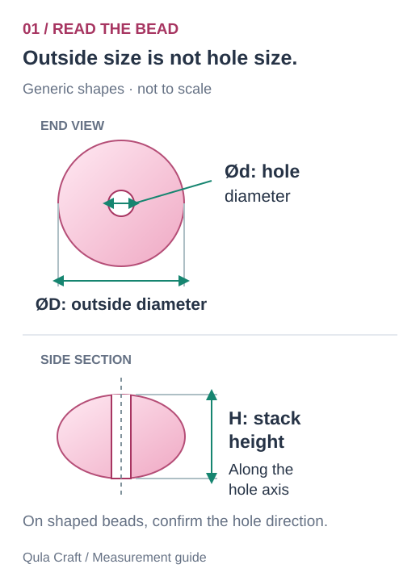
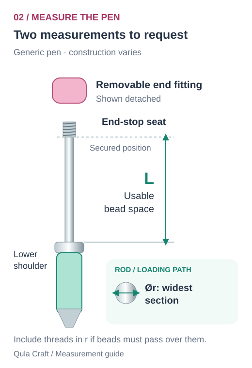
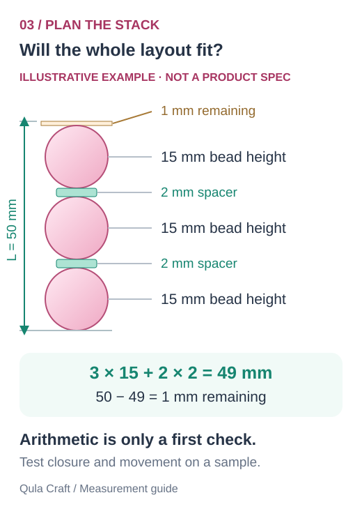
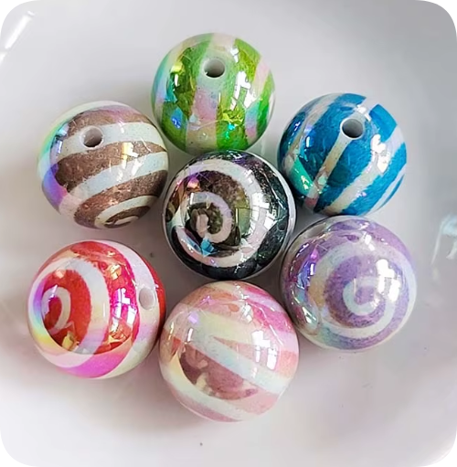
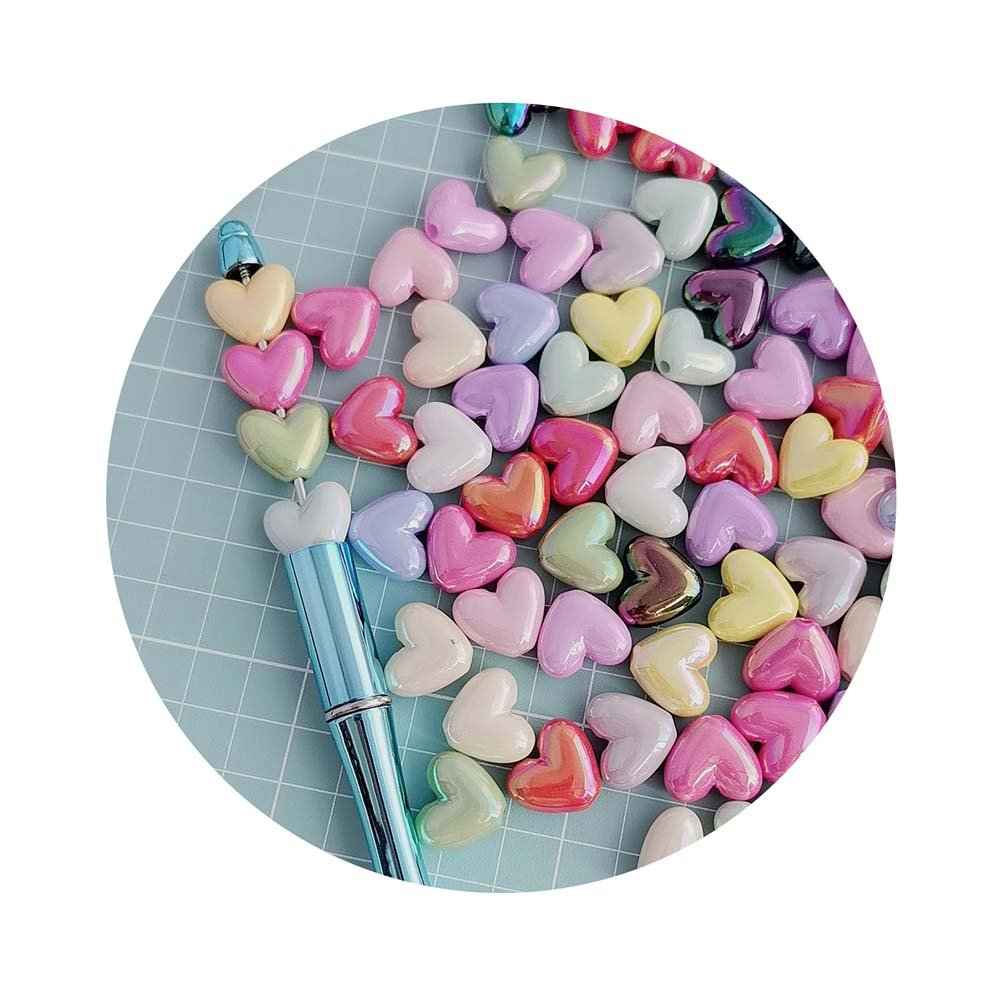

How to Choose Beads for Pens: A Size & Fit Guide
Bead diameter. Hole diameter. Usable rod length.
Measure the three things that decide whether your design works.
October 1, 2026 · Qula Craft Sourcing Team
1. Three bead measurements that do different jobs
When a listing says “15 mm bead,” that usually describes an outside measurement. It does not mean the hole is 15 mm wide. For a round bead, record its outside diameter D. For a heart, leaf or character bead, ask for width, height and thickness instead of treating the longest side as a diameter.
The hole diameter d determines whether the bead can slide over the pen rod. The stack height H is the distance the bead occupies along that rod when assembled. On a shaped bead, this may differ substantially from the width shown in a product photo.

How to measure a bead
- Outside size: use the outside jaws of a caliper. For a shaped bead, measure each relevant direction and include a photo showing which direction each number describes.
- Hole size: ask for the supplier's specification. Small openings can be difficult to measure with ordinary caliper jaws; a suitable pin gauge or a test on the intended pen rod is more useful than estimating from a photograph. Do not force a measuring tool into the hole.
- Stack height: measure along the intended hole axis. For irregular shapes, assemble a sample because neighboring beads may nest together or touch before their full dimensions add up.
Also check hole direction. A top-to-bottom hole and a side-to-side hole can make the same focal shape face differently on the pen. A flatback charm without a through-hole is not a direct substitute for a drilled bead.
2. Measure the rod, not the pen grip
The grip is the wide part you hold when writing. The rod is the narrow part through the beads. A pen's overall length or grip width does not provide either the rod diameter or the space available for beads.
Following the pen supplier's assembly instructions, remove the end fitting if the design allows it. Measure the rod with a caliper and check any threaded or raised section that a bead must slide over. Record the largest diameter on that loading path, r, rather than only the smooth shaft.

What counts as usable beading length?
L is the space available for the assembled bead-and-spacer stack between its two seating surfaces. Identify the lower shoulder and the underside of the upper stop in its correctly secured position. Exclude any length reserved for the cap, thread engagement or other hardware according to that pen's instructions. Do not use the full exposed rod length if part of it disappears inside the end fitting.
If the upper seating position is unclear with the cap removed, ask the pen supplier for a drawing or test a sample assembly. Record dimensions in millimeters and photograph the measurement. Different pen blanks use different rods and fittings, so there is no single hole size or beading length that fits every design.
For rigid acrylic or resin beads, matching nominal numbers are not proof of a sliding fit. Hole variation, coatings, burrs and the threaded section can affect assembly. Confirm the supplier's tolerance and test actual samples. A larger hole may slide on but still allow unwanted movement; test the finished arrangement as well.
3. Add the length of every bead and spacer
Choose the focal bead first, then work out the space remaining for round beads, spacers and decorative caps. Add each component's effective height along the rod, including any hardware that sits inside L. For bead caps that overlap a bead, measure the combined assembly instead of counting the overlapping depth twice.
Remaining space = usable length L − stack length S

Worked example: 50 mm available, 49 mm occupied
Imagine a pen blank whose measured usable length is 50 mm. Three beads with measured stack heights of 15 mm each occupy 45 mm. Two spacers with axial heights of 2 mm each add 4 mm. The nominal stack is 49 mm, leaving 1 mm.
This calculation screens the layout; it does not approve the fit. Assemble a sample and check how the end fitting closes, whether components rotate or rattle, and whether the pen writes and operates correctly. The acceptable remaining space depends on the hardware and component tolerances.
If S is greater than L, shorten the layout or use a different pen blank. Do not leave the cap partly fastened to gain space. If the stack is loose, revise the spacer combination within the pen supplier's instructions. Do not solve a small hole by forcing or drilling the bead as a routine buying step; choose a verified compatible component.
4. Read real product specifications without assuming fit
These two Qula Craft examples show why outside size and hole size need separate confirmation. They are candidates to compare, not a pre-approved pen-and-bead combination.

YA893 · Round acrylic beads
Listed outside diameter: 15 mm.
Pack reference: 100 pieces per bag.
Hole diameter and actual fit must be confirmed. Do not borrow a hole-size value from another SKU just because both are acrylic beads.

YA425 · Heart acrylic beads
Listed size: 16 × 18 mm.
Listed hole diameter: 2.5 mm.
Pack reference: 500 g per bag.
Confirm dimension directions, hole direction and occupied stack height. A 2.5 mm nominal hole does not automatically fit a rod also labeled 2.5 mm.
For more shapes and pack references, use our seven-product comparison in the wholesale buyer guide. Explore focal beads for pens and acrylic bead styles after recording your pen measurements.
5. Choose shape, material and finish for the finished pen
Outside diameter affects handling and appearance. A wide focal can create a visual center, but it may interfere with a clip, the end fitting or the user's hand. Check the assembled pen from the front and side, then write with it to judge balance rather than choosing by photo alone.
Material and finish should match the specific SKU. Compare the actual acrylic or resin sample for color, surface finish, weight and hole quality. An AB finish is a visual effect; it is not a promise about scratch resistance or identical color under every light. Ask for consistent viewing conditions when approving colors.
Shape needs an orientation check. Hearts, leaves, cupcakes and character focals can face the wrong way if the hole runs in an unexpected direction. Send a sketch of the intended arrangement and ask for a photo of the sampled assembly before placing a bulk order.
6. Send a useful wholesale enquiry
For each SKU, state how many finished pens you plan to assemble and how many beads of that SKU go on each pen. Multiply those quantities to estimate piece requirements, then discuss any sampling or replacement allowance. Weight-based packs need a confirmed piece-count estimate; a 500 g bag does not mean 500 beads. Pack size and minimum order are separate.
Bead SKU(s), material, finish and preferred colors
Pen blank model or supplier drawing, plus a clear photo
Largest loading-path rod diameter r: ___ mm
Usable beading length L: ___ mm
Required hole direction and bead arrangement
Quantity per SKU, pack preference and sample requirements
Destination, requested delivery date and any custom design details
Ask the supplier to confirm the hole measurement, occupied height, sample fit, MOQ, unit price and dispatch timing in the quotation. Pen blanks and photography props are not included unless specifically listed. For a complete collection, custom components and finished accessories can be discussed individually.
Frequently asked questions
What size beads fit beadable pens?
Check the hole diameter against the largest part of the pen rod the bead must pass over, then compare the assembled bead-and-spacer stack with the usable beading length. Outside bead diameter alone does not establish compatibility.
Does a 15 mm bead have a 15 mm hole?
No. The 15 mm value usually describes the outside size. Hole diameter is a separate measurement that must be confirmed for the exact bead.
How many beads can I put on a pen?
It depends on the usable beading length and the occupied height of every bead, spacer and fitting. Add their effective stack heights, compare the total with the pen's available space, and test the assembled sample.
Will a 2.5 mm hole fit a 2.5 mm rod?
Equal nominal values do not establish a sliding fit for rigid beads. Threads, tolerances and hole finish matter. Confirm the largest loading-path diameter and test the exact combination before ordering.
Specification note: the diagrams are original measurement illustrations. Product values above are from Qula Craft's September 30, 2026 listing sheet. The 50 mm calculation is hypothetical. Always confirm current specifications and the actual pen assembly.
Why we avoid a universal fit claim: supplier instructions vary by model. For example, Madison Beads lists a 52 mm beadable stick and a 1.5 mm minimum hole, while PandaHall's AJEW-L082-B02 lists an approximately 2 mm pole and a minimum 2.5 mm bead hole. These are examples of different pen blanks, not Qula Craft specifications. References checked October 1, 2026.